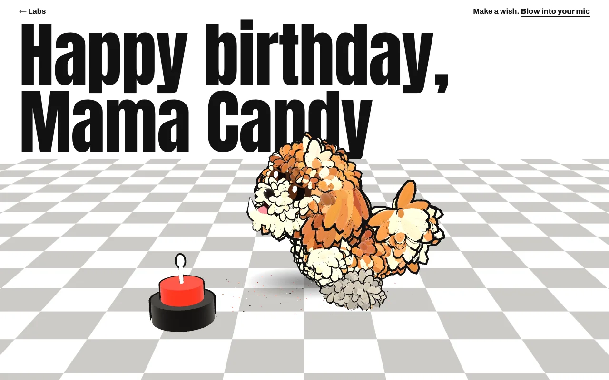
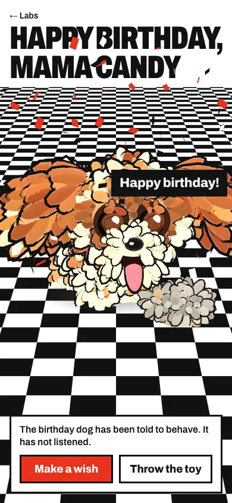
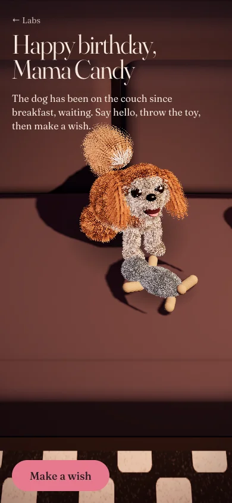
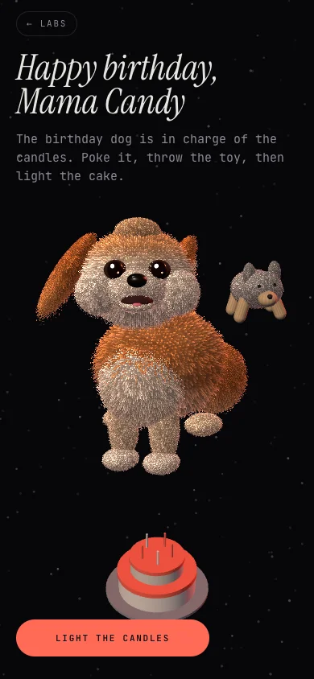
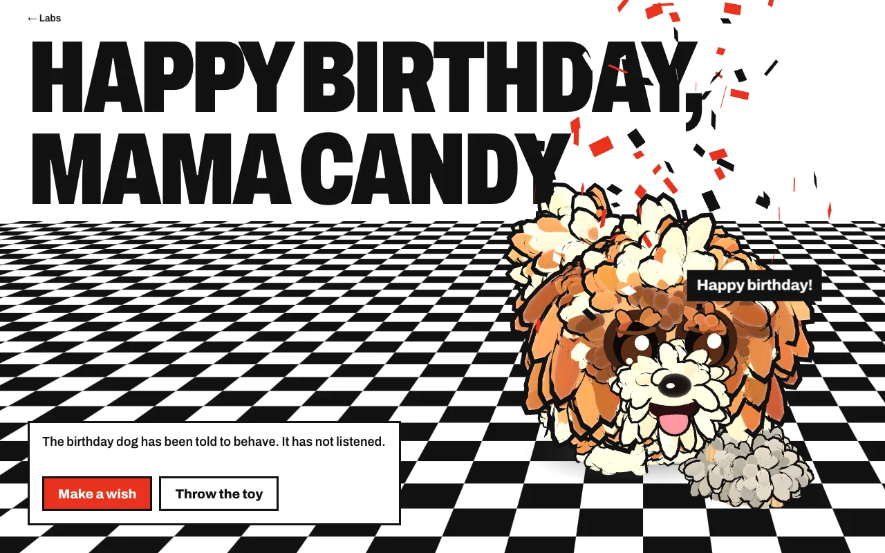
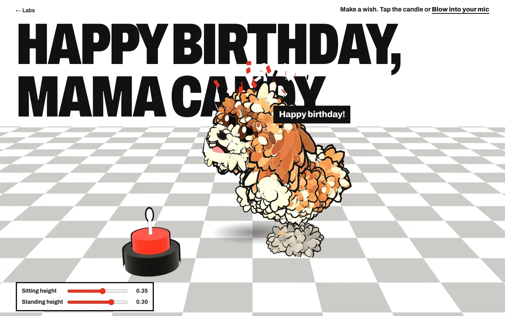
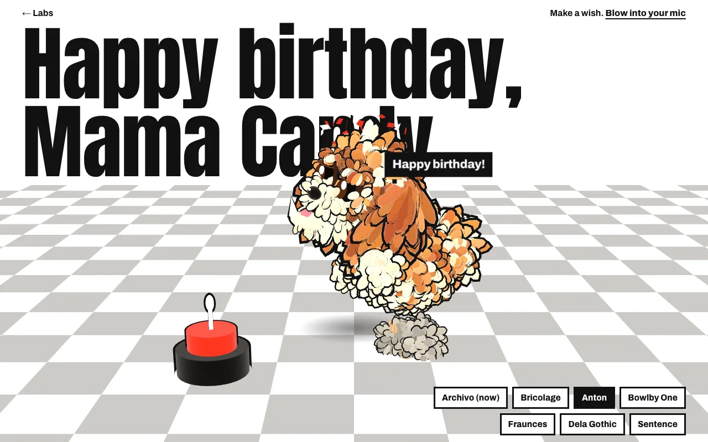
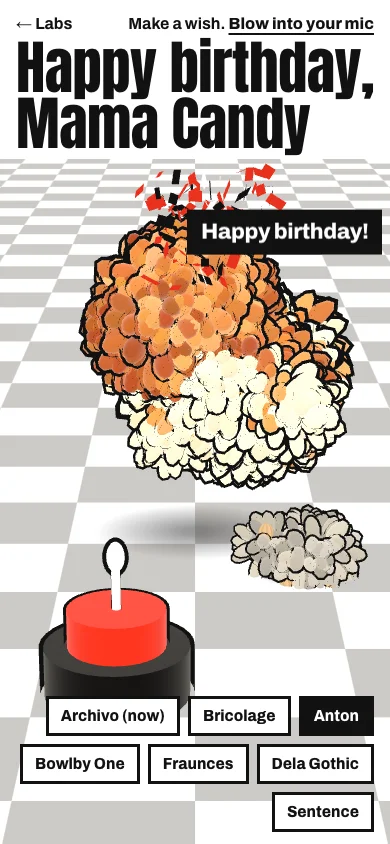

A birthday card for Mama Candy, with Otto the shih tzu on it. The brief was one sentence: a rich, interactive card with a good 3D dog that reacts to you. Most of the work was working out what kind of card, then fiddling with a leg.

I didn't want to start from "a dog on a page". I gave the style question to the taste skill, a design rulebook for coding agents, and asked for three directions. Its rules did the useful boring work: one ground, one ink, one accent, big type, no decoration for decoration's sake. Three builds ran side by side, each with the same dog and the same brief, so the only thing that changed was the look.



Rule: don't pick a style from a description. Build all of them and look.
Pop won for a simple reason: I didn't want realistic. I wanted it light-hearted and fun. Golden Hour was lovely and a bit too serious. A dog floating in space was never going to land with my mum, who is who this is actually for. And Pop made me smile, which is true, so I went with the reaction I had. The checkerboard is lifted straight from the rug in the photo, which didn't hurt.
That was a gut call and it was the right size of call for a birthday card for one person. For a higher-stakes page, or a paying customer, I'd do more: a Self-Assessment Manikin to measure how people actually feel about each direction, and some five-second tests to see what they take in and remember.

Rule: for a card, a smile is the test. For a customer, measure it.
Two things bothered me straight away. The checkerboard was too harsh, so the squares got about twice as big and the dark ones went to a warm pale grey. And the dialog box with its buttons felt like a form on a birthday card.
It's gone. Instead a cake peeks up from the bottom edge. Tap the bottom of the screen and it slides in diagonally from the corner and the dog sits down to look at it. The cake is the button.
Rule: if the interface is a box of buttons, hide it inside the scene.
The first dog was a very fluffy popcorn ball. Better than nothing, but not a shih tzu. A few rounds of notes fixed the face:
Then the body language. When the cake is out he sits, and turns side-on so you see him in profile. When nothing's happening he occasionally sprints off the left edge and comes back in from the right and stops. And Otto has a trademark awkward leg, his front left, so when he sits it sticks straight out sideways. That one took two attempts, because from the front his head covers it. Turning him a bit further towards the cake fixed it.
Rule: the specific, slightly wrong detail is the likeness.
The card opens with the candle already lit, so you don't have to work out what to do. You can blow it out by tapping the cake, or press "Blow into your mic" and actually blow. The browser only asks for the microphone when you press that button. Blow it out and there's confetti, a bark and a fresh wish. When you blow, the flame leans and shrinks, so you can see it hearing you.
The toy was too hard to grab, so touching anywhere near it now counts, not just the plush itself.
Rule: be generous with where a finger lands.
Sitting made his paws sink into the floor. Instead of lowering the floor (which would have meant moving the cake and the toy too) I lifted the dog. I couldn't judge the height by eye from a description, so I added two sliders, one for sitting and one for standing, and I set them by hand: 0.35 sitting, 0.3 standing. Then the sliders came out.

Rule: when you can't describe it, give yourself a knob.
The headline began in a heavy condensed grotesk, Archivo. I asked for five alternatives, picked by the same rules (one family, tight tracking, two lines at every width), and added a preview with a caps toggle so I could compare them on the real page. Anton in sentence case won: tall, loud, and friendlier in lowercase. The Labs link and the hint line up along the top now, and the hint is shortened to "Make a wish. Blow into your mic" so it fits on a phone.


Rule: choose a typeface on the real page, not in a specimen.
The dog isn't a model. There's no 3D file: Otto is built in code out of a few hundred fluffy tufts, with ears and a tail on springs, so he reacts instead of looping an animation. It's stylised, not anatomical, and that's on purpose.
I've tried it on my phone and live, and it's great. The mic was the one thing that didn't work. Breath is noise, and browsers are built to remove noise, so noise suppression and auto-gain were quietly flattening the blow. The fix: ask for the raw microphone, judge a blow against how loud the room is rather than a fixed number, and not wait on the audio context to wake up. I checked the audio path against a fake microphone in a headless browser. A real blow on a real mic is still mine to confirm.
Rule: say what you haven't tested, and fix what real people tell you.